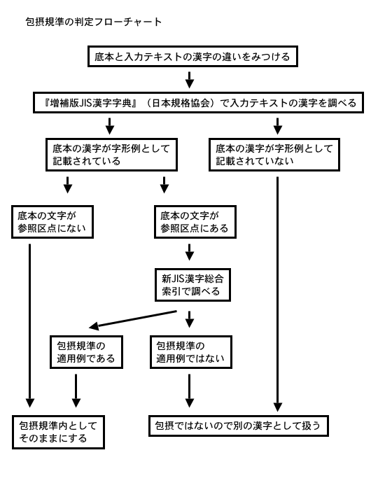

ここには、青空文庫に寄せられるよくある質問を、一問一答形式でまとめてあります。わからないことは、青空文庫に直接問い合わせる前に、こちらから確認して頂けますと幸いです。
Ｑ：青空文庫って、何ですか？
Ａ：1997年に始まったボランティア活動で、誰にでもアクセスできる自由な電子本を、共有可能なものとして図書館のようにインターネット上に集めようとしております。現在は、日本国内で著作権保護期間の満了した作品を中心に、ボランティアのみなさんの力によって電子化作業を進めています。青空文庫はそういった電子化活動のための、またその成果物をアーカイヴしておくための場でもあり、そこからコピーされた本の集成や活用事例もまた〈青空文庫〉と呼ばれることがあります。詳しくは「青空文庫のしくみ」（https://www.aozora.gr.jp/aozora_bunkono_shikumi.html）をご一読ください。Ｑ：青空文庫の歴史を知りたいのですが……
Ａ：青空文庫の創設メンバーのひとりが書いた「青空文庫ものがたり」（https://www.aozora.gr.jp/cards/001739/card55745.html）が、公開されています。そのほか、青空文庫のことがわかる関係書籍・資料として、以下のものがあります。富田倫生（1997）『本の未来』アスキー出版局／青空文庫版
：設立に至る背景が記されている
富田倫生（1998）『インターネット快適読書術』ひつじ書房
：第五章で設立初期の青空文庫が触れられている
青空文庫編（1999）『青空文庫へようこそ インターネット公共図書館の試み』トランスアート
：実験的なオンデマンド出版によって刊行された、青空文庫の自己紹介本
野口英司編著（2005）『インターネット図書館 青空文庫』はる書房
：青空文庫の成り立ちや関係者のインタビュー、著作権問題などがまとめられている
青空文庫編（2007）『青空文庫10歳記念版「蔵書６３００」』青空文庫
：10周年記念のイベントで配布された DVD-ROM、過去のアーカイヴや青空文庫の活用事例も収録
青空文庫編著（2007）『青空文庫 全――もう一つの読む自由』青空文庫
：全国の公共図書館に寄贈された青空文庫 DVD-ROM
大久保ゆう（2010）『Think Ｃ×Ｃ』ALZ
：著作権保護期間延長問題に関係した青空文庫の活動がレポートされている
大久保ゆう（2014）「クラウドソーシングを先取りした青空文庫の軌跡 -ボランティアによる電子ライブラリ活動-」『情報処理』55巻5号
：青空文庫をめぐる人のつながり方についてまとめられている
大久保ゆう（2017）「青空文庫から.txtファイルの未来へ：パブリックドメインと電子テキストの20年」『情報管理』59巻12号
：青空文庫における電子翻刻技術の展開が述べられている
そのほか、青空文庫サイト内の「直面した課題」（https://www.aozora.gr.jp/houkokusyo/kadai.html）にも、青空文庫の奮闘の軌跡が資料として蓄積されています。また、青空文庫の呼びかけ人である故・富田倫生さんの講演動画や関係記事については、ボイジャーさんが「【追悼】青空文庫_富田倫生さんの足跡」（http://voyager.co.jp/tomita/）にまとめてくださっています。ご参照ください。
Ｑ：青空文庫（https://www.aozora.gr.jp/）にアクセスできません！ どうしたらいいでしょうか？
Ａ：かつては中味はまったく同じで、更新も同時に行っているミラーサイト（http://mirror.aozora.gr.jp/）を用意していましたが、現在は休止しております。うまく繋がらない場合は、しばらくお待ちの上で再度試してみてください。Ｑ：青空文庫にはどんな作品が収録されているのですか？ 全作品のリストがほしいです！
Ａ：「総合インデックス」（https://www.aozora.gr.jp/index_pages/index_top.html）の目次ページから「作家別」欄の「全てを表示」をクリックすると、「公開中の作品」または「作業中の作品」を網羅した、下の図のような書誌データ付きの一覧表を入手できます。
ここからは、著者名、翻訳者名、底本名、底本の出版社名、新字旧字・新仮名旧仮名のいずれを用いた表記か、いつから公開されているか等のデータを CSV 形式（zip 圧縮）で得ることができます。一覧表は、新しく作品が公開されるごとに更新されます。
なお、これらの CSV ファイルについては、「クリエイティブ・コモンズ 表示 2.1 日本 ライセンス」（http://creativecommons.org/licenses/by/2.1/jp/）で公開するものとします。
また、aozorahackによる第1回ハッカソンで、「青空文庫コマンドラインツール」も開発されています。
Ｑ：青空文庫の図書カードのアドレスに、規則性はありますか？
Ａ：図書カードの URL は、以下のように決めています。https://www.aozora.gr.jp/cards/xxxxxx/cardyyyyy.html
xxxxxxは人物 ID、先頭ゼロの6桁固定。
yyyyyは作品 ID、先頭ゼロなし、桁数は不定。
例えば、愛知敬一（人物 ID：1234）「ファラデーの伝」（作品 ID：46340）の図書カードの URL は、以下のように決まります。
https://www.aozora.gr.jp/cards/001234/card46340.html
その他、書誌データを作る際の方針は、「青空文庫における書誌データのとりかた」（https://www.aozora.gr.jp/metadata_collection/index.html）に記してあります。
なお個別ファイルで、46340_24939.html というように、作品IDともうひとつ数字がつけられていますが、これは全ファイルの通し番号です。ファイルが更新されるたびに変わりますので、ご注意ください。
Ｑ：青空文庫にリンクを貼ってもいいでしょうか？
Ａ：青空文庫のページやファイルにリンクする際は、「青空文庫へのリンク規準」（https://www.aozora.gr.jp/guide/linkkijyunn.html）に従ってください。リンク先が示すとおり、「作家別作品リスト」、「図書カード」に直接リンクしてもらってもかまいません。「作家別作品リスト」、「図書カード」の URL は、人物 ID、作品 ID によって決まります。原則として、人物 ID、作品 ID は変更しません。
ただし作品個別のファイルについては、更新されるたびに通し番号（前項参照）が振り直されるため URL が変わります。直接ファイルにリンクされる際には、ご注意ください。
長谷川集平さん制作のリンク用バナーも、どうぞご利用ください。
相互リンクについては、ただいま受け付けておりません。あらかじめご了承ください。
Ｑ：青空文庫の新着を自動的にお知らせしてくれる機能はありませんか？
Ａ：うにさんが、毎日の新着情報を RSS で書き出したものをこちら（http://eunheui.sakura.ne.jp/aozora/whatsnew.rdf）に用意してくださっています。また、twitterには、上の RSS を利用した青空文庫の新着情報を教えてくれるアカウント（https://twitter.com/aozoranow）もあります。
さらにまた、潮流工房さんによる OPDS フィード（http://aozora.textlive.net/catalog.opds）もあります。
Ｑ：過去（１年以上前）の「新着情報」は見られないのですか？
Ａ：前年・以前に公開された作品は、その年の「新着情報」の最終ページ、１月１日公開作品の下に、各年の「新着情報」へのリンクを貼ってあります。そちらからご確認ください。なお、2000年以前の新着情報は、この方法では参照することができません。過去の「そらもよう」で確認してください。（「そらもよう」のいちばん下に、過去の「そらもよう」へのリンクがあります。）
Ｑ：青空文庫の収録作品を、一括してダウンロードすることはできないのですか？
Ａ：青空文庫のデータ一式は github にも置かれ、毎日更新されています。公開サーバーで削除したものを消してないという難もありますが、あるがままの状態でかまわなければご利用ください。（https://github.com/aozorabunko/aozorabunko）Ｑ：青空文庫と本の未来基金とはどんな関係にあるのですか？
Ａ：外部サイト「基金について｜本の未来基金」（http://honnomirai.net/about.html）の「青空文庫と「本の未来基金」の関係」をご参照ください。Ｑ：青空文庫は図書館なのですか？
Ａ：青空文庫は、図書館法における「図書館」に当たりません。ただしマスコミ等の「インターネット公共図書館」という報道を受けて、当文庫の活動をイメージしやすい言葉として「図書館」というフレーズを用いることがあります。また「図書館の自由に関する宣言」についても、現在のところ掲げてはおりません。Ｑ：青空文庫形式って、何ですか？
Ａ：青空文庫では、電子化の基本となるテキストファイルを制作する際、ファイル形式上そのままでは表現できない底本の日本語組版要素を、書式を定めて注記という形で一部簡易的にマークアップしており、その形式が俗称として「青空文庫形式」と呼ばれてきました。記法・タグの一覧は、「注記一覧」（https://www.aozora.gr.jp/annotation/）にまとめてあります。この形式に対応した作品閲覧ソフトウェアも様々作られ、また青空文庫の提供するテキストの普及から、青空文庫外での利用も増えてきました。その点に鑑みて、外部利用を前提としたサイト「組版案内」（http://kumihan.aozora.gr.jp/）も用意しています。今後の活用・構造化について広く話し合う場も求められていますが、ボランティアの常として、有志による自発的な構築を待ちたいと思います。Ｑ：『青空文庫 全』って、何ですか？
Ａ：2007（平成19）年７月７日に開設10周年を迎えたのを記念して青空文庫が制作した、DVD-ROM付き冊子の名称です。当時公開されていた407名の著作権保護期間が切れた作家・翻訳家の作品、約6500点を収録しました。社団法人日本図書館協会、ライブラリー・アド・サービス、国際交流基金情報センターライブラリーといった関係各所のお力添えもあって、公共図書館、大学・短大・高専付属図書館、高校図書館、そして盲学校、聾学校、点字図書館、海外の図書館などに寄贈することができました。 詳しくは、「青空文庫を図書館の書架に！＿『青空文庫 全』寄贈計画のお知らせ」（https://www.aozora.gr.jp/kizokeikaku/）をご覧ください。Ｑ：青空文庫のボランティア活動に参加したいのですが……
Ａ：青空文庫は、ボランティアの力で成り立っています。入力、校正、ファイル作成などに力をふるってくれる皆さんを、青空文庫では「青空耕作員」もしくは「青空工作員」と呼んでいます。「自分も耕作員・工作員として動いてみよう」と思われた方は、まず、「耕作員を志願される皆さんへ」（https://www.aozora.gr.jp/guide/kousakuin.html）を参照してください。青空文庫耕作員・工作員になる流れについては、以下の図のようになります。

（野口英司［編著］『インターネット図書館 青空文庫』はる書房、p74-75より）
Ｑ：青空文庫に自分の作品を登録してほしいのですが……
Ａ：現在、青空文庫に自らの作品を登録するためには、一定の条件があります。「翻訳者が、自身の翻訳の収録を望む場合」と、「著作者（あるいは著作権継承者）が、すでに書籍として公刊された作品の収録を望む場合」の二例ですが、詳細については「青空文庫への作品収録を望まれる方へ」（https://www.aozora.gr.jp/guide/shuuroku.html）をご参照ください。青空文庫では、開始当初、著作者本人の希望による作品のリンク登録を行っていました。しかし、当時の担当者たちが次第に登録のための手続きに困難を感じるようになったため、しばらくのあいだ、登録は実質的な休止状態にありました。そのため過渡期においては、対象を書き下ろしを除いた「すでに書籍になっているもの」に限定し、著作者を含めた自発的なプロジェクトによって進められた作品を、実験的に登録していました。
現時点でも、必ずしも著作権あり作品の登録に、十分な人員が割けているわけではありません。その点、どうかご容赦ください。
Ｑ：青空文庫に自分の訳した作品を登録してほしいのですが……
Ａ：青空文庫では、著作権切れの外国語作品で、独自に翻訳されたものも、サイト本体に青空文庫の注記形式に準拠したファイルを収録、ないし図書カードから翻訳者自身のサイトにリンクを貼ることで登録しています。登録を希望される翻訳者の方は、「青空文庫への作品収録を望まれる方へ」（https://www.aozora.gr.jp/guide/shuuroku.html）をご参考の上、ご連絡ください。また、古いものではありますが aozorablog の以下の記事「自分の PD 翻訳を青空文庫に登録してもらうには」（https://www.aozora.gr.jp/aozorablog/?p=663）も、準備する上で参考になります。
登録された作品は、「青空文庫収録ファイルの取り扱い規準」（https://www.aozora.gr.jp/guide/kijyunn.html）と「青空文庫へのリンク規準」（https://www.aozora.gr.jp/guide/linkkijyunn.html）に従って、扱われます。申請前に、それぞれご一読ください。
ただし、申請された作品が、基本的人権を損なうような作品や著作権法上問題のある作品である場合は、お断りすることがあります。あらかじめご了承ください。
Ｑ：グループで青空文庫に参加してもいいですか？
Ａ：はい、グループでのご参加も歓迎します。分担作業をなさる場合は、代表者をひとり決めて、グループ名と代表者のメールアドレスをご登録ください。企業のボランティア参加も、同様の形で受け入れています。グループのメンバーが個々の耕作員・工作員として活動なさる場合は、個別にご登録いただいても構いません。
Ｑ：青空文庫のボランティアは、ずっと続けなければいけませんか？
Ａ：そんなことはありません。一作品に限って作業された方もいらっしゃれば、長くボランティアをしていらっしゃる方でも、あいだ数年お休みしている時期があったりしますし、作業可能な時期だけ集中して取り組む方もおられます。あくまでボランティアですので、自分にできることを、できる範囲で無理なくやっていただければ結構です。Ｑ：入力・校正作業をする際に用いる便利ツールはどこにありますか？
Ａ：各種マニュアル、各種ツールともに基本的なものは以下のページにまとめてあります。「工作員手帳」（http://eunheui.sakura.ne.jp/aozora/）
これらのツールは、有志・関係者の手によって作られました。ありがとうございます。
Ｑ：青空文庫形式の注記を入力するための専用ソフトウェアはありますか？
Ａ：専用ソフトウェアはありませんが、ウィンドウズ用の Mery というフリーテキストエディタに対応した、青空文庫注記マクロが公開されています。詳しくは、「MeryWiki」（http://www.haijin-boys.com/wiki/）をご参照ください。「WZsoft」（http://www.wzsoft.jp/）の有償ソフトウェア「テキストエディタ WZ EDITOR 9」および「ライティングエディタ WZ Writing Editor 2」では、青空文庫組版を実装していることが公表されているほか、「O's Editor」（http://ospage.jp/soft/oseditor2/oseditor2.html）、「TATEditor」（http://www.cc4966.net/）、「VerticalEditor」（http://infoseek_rip.g.ribbon.to/truestories.hp.infoseek.co.jp/）といったソフトウェアもあります。
また Mac 用では、mi というフリーテキストエディタにも対応したモードが公開されています。詳しくは、「mi - テキストエディタ」（http://www.mimikaki.net/）と「mi 用 青空文庫モード - Fairfield.」（http://fairfield.minibird.jp/other_resources/mi-%E7%94%A8-%E9%9D%92%E7%A9%BA%E6%96%87%E5%BA%AB%E3%83%A2%E3%83%BC%E3%83%89）をご参照ください。
Android 向けアプリケーションとしては、一部対応した「Jota+」（https://sites.google.com/site/aquamarinepandora/jotaplusja）があります。
さらに、蒋龍さんによる「無名作家の青空」（http://show_ryu.nce.buttobi.net/）には、「青空文庫形式入力エディタ(β版)」（http://showryu.web.fc2.com/aozora/aozoraeditor.html）も用意されています。そのほか、aozorahack でも汎用エディタが開発中です。
Ｑ：入力・校正するための古い底本はどうやって見つければいいでしょうか？
Ａ：校正者の場合は、使用する底本が決まっていますので、書誌データを参考にして古書店（ネット古書店含む）もしくはお近くの公共図書館をまずは探してみてください。また当該の書籍が「国立国会図書館デジタルコレクション」（http://dl.ndl.go.jp/）、「うわづら文庫」（http://www.let.osaka-u.ac.jp/~okajima/uwazura.html）に収録されていることもありますので、一度検索してみてください。入力する底本も、取り組みたい本や作品が決まっていれば、おおむね同様の方法で探すことができます。まずは国立国会図書館サーチ（http://iss.ndl.go.jp/）等で、作品の収録された本にはどのようなものがあるのか当たりをつけておくと、探しやすくなります。また、公共図書館のレファレンス（参考図書）コーナーには、作家やジャンルごとにまとめられた書誌が開架されていることもあります。また、インターネット上では作家のファンが書誌を公開している場合があります。そちらも参考にしてみてください。
底本の探索については、蒋龍さんによる「無名作家の青空」（http://show_ryu.nce.buttobi.net/）内「著作権切れ作家の作品（底本）の探しかた」（http://show_ryu.nce.buttobi.net/teihon.html）もご参照ください。
Ｑ：データベースに登録されていない作家の生没年はどうやって調べたらいいでしょうか？
Ａ：底本に生没年が記載されている場合は、その情報を申請時に書き添えてください。またインターネット上で検索可能なものとして、国立国会図書館の典拠データ検索・提供サービス「Web NDL Authorities」（http://id.ndl.go.jp/auth/ndla）があります。できればこちらも検索して、確認してください。著名な人物であれば、Wikipedia 等の項目に記載があることもあります。また公共図書館の参考図書コーナーにある人名録・事典類や、著作者の地元図書館の郷土資料などにも、情報のある可能性があります。
国立国会図書館のリサーチ・ナビにも、「著者の没年を調べるには」（https://rnavi.ndl.go.jp/research_guide/entry/theme-honbun-100009.php）というページがあります。ご参考ください。
そのほか、「無名作家の青空」（http://show_ryu.nce.buttobi.net/）内「著作権が消滅した作家の一覧」（http://show_ryu.nce.buttobi.net/sakka2.html）でも、情報を五十音順のリストで参照することができます。なお青空文庫サーバ内の「著作権の消滅した作家名一覧」（https://www.aozora.gr.jp/siryo1.html）にも、少ないものの情報があります。
青空文庫で作業を進めるためには、作品に関係する著作者の生没年情報が不可欠です。著作権状態の不明ないわゆる「孤児作品」については、現在青空文庫では取り扱うことができません。あしからず。
Ｑ：詩集のなかから詩をひとつだけ取り出して入力したいのですが、いいでしょうか？
Ａ：青空文庫では、詩集として本になっているものは、一詩集として電子化することを目指しています。例えば、中原中也の詩集「在りし日の歌」には、多くの詩と後記が含まれていますが、この場合は、あくまで「在りし日の歌」という一つのまとまりとして登録し、個別の詩を切り離して収録する、あるいは中の何篇かのみを収めることは避けたいと考えています。
詩集の場合は、この原則を適用して、底本のまますべての詩を完全な形で収めることを、まず第一の選択肢として検討していただけると助かります。
ただし、生前に自身の手によって詩集が編まれていない等の個別の事情がある場合は、この限りではありません。
Ｑ：入力者と校正者を同じ人がやってはいけないのですか？
Ａ：現在のところ、原則として入力者と校正者が別の方になるようお願いしています。青空文庫では、作品の入力完了後、ファイル送付前の入力者校正を推奨しておりますが、それでも間違いが残りますので、ファイル作成時の誤りをできるだけ減らすためにも、ご理解いただけると助かります。ただし、古いファイルや、著作権の存続している登録作品については、データベースの表示上、入力者と校正者が同一人物になっていることもあります。
Ｑ：ある作家について、複数の耕作員で作業プロジェクトを立ち上げたいのですが、青空文庫の承認は必要ですか？
Ａ：著作権保護期間の満了した著作者の作業プロジェクトについては、自由に立てて実行してください（その代わり、進行管理広報についても、可能な限り個々人でお願い致します）。ただし、プロジェクトの成果が最初に公開されるタイミング等で、「そらもよう」などでのプロジェクトのご報告を依頼することがあります。その際は、ご協力いただけると助かります。また各プロジェクトで国会図書館の NDL ラボから提供されている「翻デジ」（http://lab.kn.ndl.go.jp/dhii/）をご活用頂いても構いません。
Ｑ：ある作品がずっと入力中（校正中）なのですが、わたしが代わりに（続きを）やってもいいでしょうか？
Ａ：青空文庫では、作業開始から２年以上経過している作品の場合、現在の担当者と、引き継ぎたい耕作員・工作員の意思をそれぞれ確認した上で、作業を引き継いでいただくことがあります。まずは reception＠aozora.gr.jp までご相談ください。その過程で元々の担当者への連絡が不達であった場合は、そらもようで告知して１ヶ月の連絡を待ったのち、便りがなければ同意のないまま引き継いでもらうこともあります。
あるいは変則的ですが、異なる底本で作業するという手立ても残されています。
Ｑ：入力・校正受付システムには、「使用する版を入力せよ」と書かれていますが、何をどこまで入れればいいでしょうか？
Ａ：まずは底本の奥付を見てください。底本名のところには、奥付に書かれている書名を、記号・数字・空白・旧字があっても順序含めそのまま入力してください。出版社名のところも、同様にしてください。（このとき、本の「扉」からではなく必ず「奥付」を参照するようにしてください。また確認のために奥付写真の添付をお願いすることがありますが、ご協力いただけると助かります。）そして初版発行年には「年月日」のみ半角数字で、入力に使用する版の項目には「発行」というフレーズを除いた「年月日＋版刷」を入れてください。「青空文庫収録ファイルへの記載事項」の決まりとは少々異なっておりますので、ご注意ください。
（例）
底本名（必須） カープの世界
出版社名（必須） 鯉城文庫、鯉城出版
初版発行年（必須） 1972（昭和47）年4月1日
入力に使用する版（必須） 1975（昭和50）年3月3日第3刷
なお作成するファイル末には、「発行」というフレーズが奥付にあれば入れてください。なければ不要です。「發行」と旧字で書かれていても「発行」と記述してください。底本名（必須） カープの世界
出版社名（必須） 鯉城文庫、鯉城出版
初版発行年（必須） 1972（昭和47）年4月1日
入力に使用する版（必須） 1975（昭和50）年3月3日第3刷
（例）
底本：「カープの世界」鯉城文庫、鯉城出版
1972（昭和47）年4月1日初版第1刷発行
1975（昭和50）年3月3日第3刷発行
底本：「カープの世界」鯉城文庫、鯉城出版
1972（昭和47）年4月1日初版第1刷発行
1975（昭和50）年3月3日第3刷発行
Ｑ：作業する作品の初出や底本の親本などは、自分で調べた方がよいでしょうか？
Ａ：底本の扉や解題などに記述されているときのみ、受付システムや作成ファイルに入力・記載してください。他の文献やインターネットでの調査は不要です。受付システムでは、「底本の親本」については底本と同じ要領で入力してください。全集などを底本にした場合作品毎に異なる場合がありますが、入力・校正受付システムでの「底本の親本名」は、「底本データ」にしかありません。そのようなときは「底本データ」の「備考」にメモしてください。
「初出」については、「作品データ」に「初出」という項目がありますので、「雑誌名」と初版発行年を「年月日」のみ半角数字で記述して下さい。
（例）「月刊カープファン」1963（昭和38）年5月15日
作成ファイルには、「底本：」「底本の親本：」「初出：」の順に記述して下さい。底本は初出の誌に拠ったなどの記述があれば「底本の親本：」と「初出：」は同じになります。詳しくは、「青空文庫収録ファイルへの記載事項」（https://www.aozora.gr.jp/guide/kisai.html）をご一読ください。
（例）
底本：「カープの世界」鯉城文庫、鯉城出版
1972（昭和47）年4月1日初版第1刷発行
1975（昭和50）年3月3日第3刷発行
底本の親本：「ジョン・ホプキンズ選集 第二巻」書肆厳島
1965（昭和40）年5月5日初版発行
初出：「月刊カープファン」中本印刷出版部
1963（昭和38）年5月15日号
底本：「カープの世界」鯉城文庫、鯉城出版
1972（昭和47）年4月1日初版第1刷発行
1975（昭和50）年3月3日第3刷発行
底本の親本：「ジョン・ホプキンズ選集 第二巻」書肆厳島
1965（昭和40）年5月5日初版発行
初出：「月刊カープファン」中本印刷出版部
1963（昭和38）年5月15日号
Ｑ：入力者と校正者で協力してもいいですか？
Ａ：はい、（入力者自身が校正者を見つけてくること含め）耕作員・工作員同士の連携は、ご自由に。ただし、入力から校正のあいだに、点検作業が入ることもありますので、校正作業するファイルについては、必ず青空文庫点検チームから送付されたものを用いるようにしてください。また作業の際には、協力について一言添えていただけると助かります。Ｑ：入力（あるいは校正）を他の耕作員・工作員と協力してやりたいのですが……
Ａ：複数人で入力（もしくは校正）作業するときは、グループワークとして共同名義を作ってから申し込んでください（データベースの管理上こちらを推奨します）。ただし、代表者を決めて、その方から申し込んでいただいたのち、あとから協力した耕作員・工作員のお名前をご報告いただく形でも、構いません。またプロジェクトと同様、国会図書館の NDL ラボから提供されている「翻デジ」（http://lab.kn.ndl.go.jp/dhii/）をご活用頂くこともできます。
Ｑ：入力用の底本を探しても、新字新仮名のものが見つかりません。旧字旧仮名の底本から自分で新字新仮名版のテキストを用意してもいいでしょうか？
Ａ：青空文庫としての方針は、「本という財産にどう向き合うか」の「3. 底本を選ぶ」（https://www.aozora.gr.jp/aozora-manual/#3）の項目に示してあります。入力者として、あくまで元の形に近いものを優先したいと考えるのなら、底本には旧漢字・旧かなづかい（または正字正かな）のものを選んだ方がいいでしょう。ただし、その作品をもっと多くの人に読んでもらいたいと思うのなら、戦後に改められた漢字・仮名表記による底本を用いるのがいいでしょう。ある作品を旧字旧仮名・新字新仮名のどちら（あるいは両方）でアーカイヴするかは、作業者個々人のご意志・ご判断にお任せしています。とはいえ、現代表記の底本がすべての作品に見つかるわけではありません。その際、やむをえず自分から新字新仮名のテキストを用意しようと思われた方は、「旧字、旧仮名で書かれた作品を、現代表記にあらためる際の作業指針」（https://www.aozora.gr.jp/KOSAKU/genndaihyouki.html）を読んだ上で、日本エディタースクール編『標準 校正必携』等を参考に、作業を進めてください。Ｑ：自分が入力・校正した作品を、作家ゆかりの日に公開してほしいのですが……
Ａ：必ずしもご希望に添えるとは限りませんが、作業ファイルの送付時等に文学忌など一言リクエストしていただければ、公開スケジュールを設定する際、前向きに考慮したいと思います。Ｑ：作業しようと思っている作品の著作権保護期間がもうすぐ満了するのですが、今から作業申請をしてもいいですか？
Ａ：青空文庫では、まだ著作権の保護期間の満了していない作品の作業については、著作権法に抵触しないよう慎重を期するようにしています。ただし、テキストの入力作業申請自体は、保護期間の満了する年の２年前の元旦から受け付けております。Ｑ：作業時、青空文庫テキストで使用できる文字かどうかは、どうやって確認すればいいのでしょうか？
Ａ：作業途中のテキストを「チェッカー君 3.60b」（http://www.aozora.jp/tools/checker.cgi）にコピー＆ペーストして確認してください。時々接続できないことがありますが、その際は「青空文庫の応援ページ」（http://www.hyuki.com/aozora/）の「文字チェッカー 3.60」（http://www.hyuki.com/aozora/checker.cgi）をご使用ください。たとえば赤字で「[gaiji]【淸】」等と表示されていれば【淸】の字は使えない、ということなります。
また赤字で「＆＃26979;」等と表示されている際は、使用不可の文字を用いているということなので、その前後の語句でテキストを検索し、該当の字（たとえば「
 」）を見つけてください。
」）を見つけてください。「作業マニュアル」の「入力編」（https://www.aozora.gr.jp/aozora-manual/index-input.html）の「3. 入力にあたって」の「3-3. 入力に使える文字」、また「4-6. 外字」も参照してください。
（※使えない文字に気づかないまま保存しようとすると、たとえば「このファイルは、ANSI テキストファイルとして保存すると失われてしまう Unicode 形式の文字を含んでいます。」と表示され、そのまま強行すると当該の文字が「?」として保存されてしまうことがあります。このようなエラーメッセージが出たときにも、チェックしてください。またファイル送付前に「?」となっている文字がないかどうか、どうか再度ご確認をお願い申し上げます。）
Ｑ：青空文庫テキストで使用できない文字は、どのようにして入力すればいいですか？
Ａ：使えない文字については、「青空文庫・外字注記辞書（改訂第八版）」（https://www.aozora.gr.jp/gaiji_chuki/）で確認してください。たとえば【淸】の字の場合、検索機能を使うと、赤字で「淸※［＃「さんずい＋睛のつくり」］→［包摂適用 清］」と記述されているのが見つかります。「清」で入力してください。
前項で「＆＃26979;」と表示された字について検索すると、黒字で「※ ［＃「木＋眉」、第3水準1-85-86］」と記述されているのが見つかります。ここでは「※ ［＃「木＋眉」、第3水準1-85-86］」と入力してください。
（※コピー＆ペーストすると簡単ですが、環境によっては半角空白が混じることや、本来全角の「＃」や「［］」が半角になってしまうこともありますので、その場合は修正を忘れないようにしてください。）
また、「青空文庫外字注記簡易検索」（http://eunheui.sakura.ne.jp/aozora/gaijichuki.html）というツールもあります。「外字注記辞書」の表記を検索したり、または未掲載の外字については表記の提案もしてくれます。どうぞご活用ください。
Ｑ：入力に使用できない文字が「青空文庫・外字注記辞書（改訂第八版）」にもないときは、どうしたらよいでしょうか？
Ａ：「CHISE IDS 漢字検索」（http://chise.zinbun.kyoto-u.ac.jp/ids-find）で探してください。漢字の部品から検索できますので、見つかった漢字のユニコード（U+で始まる４～６桁の半角英数字）を注記に加えてください。たとえば「㪶（百＋斗）」という字の場合、「百斗」で検索すると「U+3AB6」という記述が出てきますので、その場合注記に「※［＃「百＋斗」、U+3AB6、352-5］」と入力してください。352-5というのは、底本の「ページ数-行数」です。「ページ数-行数」は、底本確認の作業を迅速化するために必ず入力をお願いします（なお行数のカウント時に空行は数えません）。また、テキスト送付時に「青空文庫・外字注記辞書（改訂第八版）」にない漢字である旨を伝えていただけると助かります。
もし、よく似ているけれども少し違う、というような字に出会ったときは、外字注記の説明部分に底本通りの字形で記述した上で、そのよく似た漢字のユニコードを念のため記述しておいてください。その場合は、テキスト送付時に「青空文庫・外字注記辞書（改訂第八版）」にない漢字で「CHISE IDS 漢字検索」の字形とも少し異なる旨と、底本の問題の漢字画像を添えていただけると助かります。
さらに、文字が「CHISE IDS 漢字検索」にもない場合は、「※［＃「斗＋林」、352-5］」のように文字の組合せと底本のページ数-行数のみを注記に入れ、テキスト送付時に「青空文庫・外字注記辞書（改訂第八版）」と「CHISE IDS 漢字検索」にない漢字である旨と、底本の問題の漢字画像を添えていただけると助かります。
Ｑ：著者名が、ある作者の別名となっているときは、どうすればいいですか？
Ａ：入力申請の際、受付システムに「人物 ID 一覧」に「別名」があれば、その「別名」の人物 ID を入れてください。ない場合、明らかに「ある作者」の別名とわかっている場合は、「ある作者」の人物 ID を入力し、「備考」に「底本の著者名は「別名」」と記述してください。そして作成するファイルの冒頭には、その「別名」を記入してください。ただし解題に初出時の署名は「別名」とあるだけで、底本の奥付や本文の著者名が「ある作者」になっている場合は、「ある作者」の人物 ID を入力するだけで結構です。そして作成するファイルの著者名は「ある作者」とし、ファイル末に「※初出時の署名は「別名」です。」と記述してください。
Ｑ：変体仮名（万葉仮名）が底本で使われていました。どうしたらよいでしょうか？
Ａ：「ゑ」や「ゐ」以外の変体仮名には、今の所JIS文字コードが割り当てられていません。・入力を担当されている場合
三つの対処法があります。
まず、原則として、「ゑ」や「ゐ」以外の変体仮名は、現在の平仮名もしくは片仮名に書き換えて入力してください。一つの変体仮名には、それに対応する現在の平仮名が一つあります。変体仮名の実際と、対応する現在の平仮名については、しだひろしさんによる「ヘンタイがいっぱい（原題、変体仮名の注記・改定案）」（http://www33.atwiki.jp/asterisk99/pages/91.html）、そして同頁の「参考資料」が大変参考になります。
１．現在の平仮名に書き換える際は、ファイル末に以下の例のように注記を追加してください。
例１-１：※変体仮名は、通常の仮名で入力しました。
例１-２：※「変体仮名え」「変体仮名い」は、仮名にあらためました。
２．変体仮名を現在の平仮名に書き換えず、外字注記の規則に沿って本文中に注記する方法もあります。
例２-１：※［＃変体仮名え、ページ数-行数］
本文中に注記をした際には、ファイル末にも以下の例のように注記を追加してください。
例２-２：※「変体仮名え」は、「江」をくずした形です。
３．文意を伝える上で必要な場合は、変体仮名の字形を本文中に画像として組み込むという方法もあります。その際は「注記一覧」の「画像」の注記に従ってください。
例３：［＃変体仮名あ（fig作品ID_通し番号.png、横20×縦20）入る］
どの方法を取れば良いのか迷われたときは reception＠aozora.gr.jp までご相談下さい。その際、できれば変体仮名が使われている箇所の画像データも送っていただけると助かります。
・校正を担当されている場合
まず、ファイル末の注記（※から始まる文）を見て、変体仮名について入力者がどういう方針を取っているのかを確認してください。
その後、テキスト本文中にある変体仮名に関する記述、または画像が底本と対応しているのかを確かめる必要があります。
しだひろしさんによる「ヘンタイがいっぱい（原題、変体仮名の注記・改定案）」（http://www33.atwiki.jp/asterisk99/pages/91.html）には、変体仮名の字形画像とそれに対応する現代の平仮名が多く掲載されています。底本と見比べていただき、判断の参考にしてください。当てはまる画像がなかった場合でも、同頁の「参考資料」にあるリンク集が大変参考になります。（「入力を担当されている場合」もご参照ください。）
Ｑ：作業中一覧にある「入力取り消し」ってステータスは、何ですか？
Ａ：「入力取り消し」は、先に申請しておられた方が何らかの事情で（本人の断念または連絡不達等）、入力までに至らなかった作品について、そのステータスがついています。その場合、別底本による申請はもちろんのこと、同底本による入力も、新たに開始することができます。なお同底本の場合は、受付システムからの申請以外にも、reception 宛てに作品 ID を付記した上で、作業を引き継ぎたい旨を送っていただく形でも、申請を受け付けております。Ｑ：OCR を用いて作業する際の注意点はありますか？
Ａ：スキャナから OCR（光学文字認識）を利用して生成したテキストファイルには、特有の間違いが多く見受けられます。スキャナを用いて OCR 入力する際、および OCR 入力したテキストを校正する際には、「校正部屋」（http://www.planaria.org/prr/）にある「デジタル校正の覚え書き【旧版】」（http://www.planaria.org/prr/#toc）および「誤認識されやすい文字リスト」（http://www.planaria.org/prr/ver1/charlist.html）がたいへん参考になります。また、OCR を活用して校正を効率的に進める手立てもあります。「校正をやりやすくする為に - aozorablog」（https://www.aozora.gr.jp/aozorablog/?p=565）もご参照ください。
また、「校正ツール2.0化ひとりプロジェクト」（http://eunheui.sakura.ne.jp/aozora/proofreader.html）でも、誤認識しやすい文字列を拾ってくれます。どうぞご活用ください。
Ｑ：反対に、手入力作業をした際の注意点はありますか？
Ａ：手作業による入力にも、また特有の間違いがあります。sogoさんによる「SOGO_etext_library」（http://e-freetext.net/）内の「手入力したテキストファイルに対する覚え書き」（http://e-freetext.net/tenyuryoku.html）には、手入力した際に多い誤りがまとめられています。ぜひ参考にしてください。Ｑ：入力・校正作業の際、漢字の字体の「包摂」をよく間違ってしまうのですが……
Ａ：作業マニュアルからは、判断の基準となる「JIS X 0208と0213規格票の包摂関連項目」（https://www.aozora.gr.jp/hosetsu_kijyun/）にリンクされていますが、実際の作業では正しく判別するのがなかなか難しいのも事実です。その場合は、以下の判定フローチャートも試してみてください。
Ｑ：Mac で作業したファイルがうまく保存できません！ どうすればいいですか？
Ａ：Mac 付属の「テキストエディット」では、初期状態で保存できるのが「リッチテキストフォーマット（rtf）」になっています。青空文庫で採用しているのは、「Shift JIS」の「標準テキスト（txt）」ですので、以下の手順に従ってください。１：「テキストエディット」の「環境設定」→「新規書類」で、フォーマットを「標準テキスト」にしてください。
２：「テキストエディット」の「環境設定」→「開く／保存」で、「標準テキストのエンコーディング」の「ファイルを保存するとき」を「日本語（Shift JIS）」にしてください。これで新規書類は「標準テキスト」で作成され、保存するときには「日本語（Shift JIS）」になります。
（※なお、作業済のファイルに関しては、「フォーマット」の項目で「標準テキストにする」を選ぶと、標準テキストに変更できます。あとから文字コードを変更することはできませんが、標準テキストにしてあれば、文字コードの変換は他のソフトで容易にできますので、文字コードだけ変換できなかった旨、ファイル送付の際に申し送りください。）
Ｑ：校正するにあたって、校正待ちの一覧表などがあると助かるのですが……
Ａ：「青空文庫校正待ち作品検索」（http://eunheui.sakura.ne.jp/aozora/koseimachi.html）というページがあります。どうぞご活用ください。Ｑ：青空文庫は縦書きでは読めないのですか？
Ａ：各「図書カード」の備考欄に、ウェブブラウザから利用可能な縦書きビューワへのリンクが貼られています。それぞれのボタンをクリックすれば、その「図書カード」の作品が縦書きで閲覧することができます。また青空文庫のテキストに対応したテキストビューワが、多くの会社・個人から各 OS・端末向けに様々開発されていますので、そちらを用いると縦書き含め、快適な読書環境が整えられます。
「青空文庫の XHTML, TEXT の読み方」（https://www.aozora.gr.jp/readingTEXT/index.html）のページもご参照ください。
Ｑ：本をジャンル別に探したいのですが……
Ａ：「総合インデックス」にリンクで組み込まれた「青空文庫 分野別リスト」（http://yozora.main.jp/）では、日本十進分類法（NDC）にのっとって内容別に分類された一覧から、公開中の作品を探せます。また、児童書に限定したリストも用意してあります。Ｑ：読みたい作品があるのですが、正確なタイトルがわかりません……
Ａ：スクリプツ・ラボさんによって、「青空文庫 うろ覚えタイトル検索」（http://aozora.pinpointfinder.jp/search.cgi）という無料サービスが提供されています。一度、お試しを。Ｑ：読んでいるときに「誤植かな？」と思えるところがありました。どうすればいいでしょうか？
Ａ：青空文庫は、通りすがりの読者からの誤植の指摘を歓迎しています。作品ファイルや図書カードにおかしいと思うところがあったら、reception＠aozora.gr.jp に連絡してください。連絡に先立って、できれば、ファイル末に記載してある底本に図書館等で当たってください。「間違い」と思った表記が、作者特有の書き方だったり、かつては当たり前のものだったりすることが、しばしばあります。「やはり入力時のミスである」と確認できたものだけを、底本の該当箇所のキャプチャ画像とともにご報告いただけると、助かります。
Ｑ：XHTML 版を読んでいると、時々文字が画像になっていたりします。これは何なのですか？
Ａ：青空文庫の XHTML 版では、くの字点を除く JIS X 0213 の文字を画像で表示することにしています。この画像ファイルは、有償・無償を問わず自由に利用できます。zip 形式で圧縮した gaiji フォルダは、こちら（http://www.sumomo.sakura.ne.jp/~aozora/gaiji/gaiji.zip）からダウンロードできます。
Ｑ：青空文庫に○○の「××」という作品がないのですが……
Ａ：ある作品がないことについて、何種類かの理由が考えられます。１．その作品の著作権は、現在も保護期間中にある。
２．「××」は作品集のタイトルのため、各作品ごとに収録されている。
３．その作品を入力（校正）しようと思い立ち行動に移したボランティアがいないため、青空文庫ではアーカイヴされていない。
文学作品などの著作物は、著作権法でさまざまに保護されています。つまり、他人が創りだした作品を第三者が勝手にコピーして配布することなどは許されません。しかし著作権法では、その保護期間に制限を設けています。日本では、著者が亡くなってから50年です。この保護期間が過ぎれば、誰もが自由にコピーが出来るようになります。青空文庫には、この保護期間の過ぎた作品が登録されています（「Ｑ：著作権って、何ですか？」もご参照ください）。
さらに翻訳作品・古典作品の場合は、原著者に加えて翻訳者または校訂者の権利が切れていなければいけません。翻訳作品については、戦勝国から政治的ペナルティとして与えられた「戦時加算」（https://www.aozora.gr.jp/KOSAKU/MESSAGE.html#ANK3）という問題もあります。なお校訂者の権利については「校訂者の権利に関する報告」（https://www.aozora.gr.jp/houkokusyo/koteisha/koteisha.html）もご一読ください。
また２について、たとえば太宰治の『晩年』は作品集の題名であるため、青空文庫では作品個別で収録をしています。詳しくは収録各作品の「作品について：」をご覧ください。以下は、巻頭作品「葉」の図書カードです。
https://www.aozora.gr.jp/cards/000035/card2288.html
またその他、特定の作品集を構成する要素が複数に分割されている際、同様の記述が図書カードにある場合もありますので、どうかご確認ください。
３については、青空文庫以外のどこかでアーカイヴされている可能性があります。それでも見つからない場合は、誰も電子化に取り組んでいないのかもしれません。そういった作品は、気づいた方の自発的な行動に期待したいと思います。（青空文庫ではリクエストの仕組みを設けてはおりませんが、実作業以外にも情報共有を試みるなど色々な道があります。）
Ｑ：青空文庫収録作品の感想を共有したいです！
Ａ：Web サービスの「ブクログ」（http://booklog.jp/）は、青空文庫収録作品に対応しています。また青空文庫の図書カードの各ページからも、当該作品に対応したブクログのページにリンクしています。どうぞご活用ください。Ｑ：作者別リストでは、芥川龍之介が竜之介になっているのですが、どうしてですか？
Ａ：青空文庫の「総合インデックス」では、人物名は新字で表記しています。著者名を新字でとることは図書館 OPAC（Online Public Access Catalog）等でも広く行われており、青空文庫でもそれに習って、「芥川」は「龍之介」でなく「竜之介」、「みだれ髪」の歌人は「與謝野晶子」ではなく「与謝野晶子」としています。ただし、作品ファイルの冒頭に記載する著者の名前については、底本通りを旨としているため旧字にすることもあります。「芥川」は大半の書籍で「龍之介」としているため、ファイル冒頭の表記もほとんどがこの形となります。Ｑ：青空文庫にあるコンテンツは自由に使ってもいいのでしょうか？
Ａ：著作権の切れている作品については、原則として自由にご活用いただけます。詳しくは「青空文庫収録ファイルの取り扱い規準」（https://www.aozora.gr.jp/guide/kijyunn.html）をご参照ください。Ｑ：青空文庫で公開されている作品で著作権が残っているものは、すべてクリエイティブコモンズライセンス（CCL）つきと考えていいですか？
Ａ：著作権保護期間中の作品には、三種類あります。１．青空文庫の本体サーバにファイルがあるもの。（必ず CCL つきです。）
２．本体サーバにないが、CCL（またはそれに準ずるライセンス）がついているもの。
３．本体サーバになく、CCL もないもの。（ただし、「読んでもらってかまわない」との“あいまいな”表明がある場合も。）
Ｑ：青空文庫にある作品を朗読したいのですが……
Ａ：「青空文庫収録ファイルの取り扱い規準」（https://www.aozora.gr.jp/guide/kijyunn.html）に従って、どうぞご活用ください。aozorablogには、「青空文庫／朗読・音声化入門ガイド」（https://www.aozora.gr.jp/aozorablog/?p=163）という記事もあります。ご参考まで。
Ｑ：青空文庫にある作品を外国語に翻訳したいのですが……
Ａ：「青空文庫収録ファイルの取り扱い規準」（https://www.aozora.gr.jp/guide/kijyunn.html）に従って、どうぞご活用ください。ただし、著作権法は各国によってその内容に差異がございますので、必ずご自分の国の事情をご確認の上、ご利用ください。また、いくつか先行の事例もあるようです。「外国語に訳された青空文庫 - パン焼き日誌」（http://d.hatena.ne.jp/bs221b/20170319）という記事もあります。ご参考まで。
Ｑ：研究のために青空文庫で用例を検索したいのですが……
Ａ：シカゴ大学によって日本語・日本文学研究者向けに、Aozora Search（http://artflsrv02.uchicago.edu/philologic4/aozora/）という用例検索システムが構築されています。また「全文検索システム ひまわり」に対応したパッケージが、有志によって提供されています。（http://www2.ninjal.ac.jp/lrc/index.php
そのほか、「青空 WING」という作家・作品情報と全作品テキストを一つにまとめた EPWING データも、有志によって制作されています。（http://aozorawing.sourceforge.jp/）
さらにまた、次のページでも、用例検索ができるようです。「日本語用例検索」（http://www.let.osaka-u.ac.jp/~tanomura/kwic/aozora/）
ほかにも、「青空文庫 形態素解析データ集」（http://aozora-word.digiweb.jp/）というものが、あるようです。
Ｑ：青空文庫では、図書館・アーカイヴ用の汎用の書誌メタデータは利用できないのでしょうか？
Ａ：青空文庫からは提供しておりませんが、国立国会図書館サーチから取得できるOAI-PMHの書誌メタデータに、青空文庫も含まれております。詳しくは、「国立国会図書館サーチが提供するOAI-PMH」（http://iss.ndl.go.jp/information/api/oai-pmh_info/）をご参照ください。
Ｑ：青空文庫形式のテキストを他形式に変換するにはどうすればいいですか？
Ａ：変換ソフトが、様々な方々の手によって用意されています。「AozoraEpub3」（http://www18.atwiki.jp/hmdev/pages/21.html）
「青空キンドル」（http://a2k.aill.org/）
その他、検索サイト等で「青空文庫 変換 （ファイル拡張子）」と入力すれば、求めるものが見つかるかもしれません。
Ｑ：青空文庫ロゴは自由に利用してもいいのでしょうか？
Ａ：トップページ（https://www.aozora.gr.jp/）等で用いられている「青空文庫」の四角いロゴですが、「クリエイティブ・コモンズ 表示-改変禁止 2.1 日本 ライセンス」（http://creativecommons.org/licenses/by-nd/2.1/jp/）にて公開しております。ただし、ロゴの使用がたとえば「公認」「青空文庫の運営」を意味するようなことは、ありません。くれぐれも誤解のなきようお願い申し上げます。
Ｑ：青空文庫を紹介する際、作品の表紙も一緒に使いたいのですが……
Ａ：青空文庫には、各作品の「図書カード」があるのみで、表紙をつけておりません。もしアマゾン Kindle 等、各電子書籍ストアの書籍表紙をご提示される場合は、それぞれのストアで独自に青空文庫のファイルを活用して表紙をつけておられますので、そちらのご利用につきましては、それぞれの配信者・運営者にお問い合わせください。Ｑ：青空文庫に登録されている作品の、おおよその長さを知りたいのですが……
Ａ：公開中の作品であれば、図書カードの「ファイルのダウンロード」の「サイズ」欄を参照すると、作品のだいたいの長さを確認することができます。いずれも、サイズは「バイト」単位です。「キロバイト」に換算するには、（不正確ですが）1000で割ってください。圧縮ファイルの解凍後のサイズは、圧縮した状態の、ほぼ２倍となります。１キロバイトは、全角文字に換算すると、500文字です。図書カードに記載されている数字が10000であれば、解凍後は20キロバイトとなり、400字詰め原稿用紙で約25枚分の長さです。ただし、画像が別に添付されている場合には、圧縮後のファイル容量が実際の長さより大きくなる場合があります。また、未公開の作品のうち、入力済となっているものに関しては、以下の手順でサイズが確認できます。
「作業着手連絡システム」→「校正受付システム」→「作家インデックス」→「作家一覧」から作家をクリック→「作品選択」の一覧でサイズを確認そのほか、一部の青空文庫ビューワアプリケーションでは、読書にかかる所要時間が目安として示されているものもあるようです。
Ｑ：ダウンロードしたテキストファイルに、今の注記形式とは異なるものが挿入されているのですが……
Ａ：青空文庫は、電子化作業を進めつつ注記の仕様を固めてきました。折々古いものを改めようとはしておりますが、いまだ修正が追いついていないものもあります。どうかご容赦ください。Ｑ：企業が青空文庫のファイルを使って商売をしているようなのですが、いいのですか？
Ａ：利用が「青空文庫収録ファイルの取り扱い規準」（https://www.aozora.gr.jp/guide/kijyunn.html）に則った形であれば、まったく問題ありません。また、ボランティアに参加される際には、そのように用いられることもあると、あらかじめご承知ください。Ｑ：作品ファイル内で注記や画像で表されている文字を、コード化したいのですが……
Ａ：H.Nakanoさんが、青空文庫のテキストファイルを JIS 第三・第四水準に対応した UTF-8 テキストに変換する「青空文庫データ変換ツール」（http://www.king.zaq.jp/nakano/projects/misc/aozora_tool.html）を用意してくださっています。Ｑ：青空文庫のテキストファイルに入っているたくさんのルビをどうにかしたいのですが……
Ａ：お答えは「どうにかしたい」の内容によりますが、たとえば以下のページを参考にしてみてください。「青空文庫テキストの傍点やルビ記号を変換「RubyMate」」（http://www.forest.impress.co.jp/article/2008/10/20/okiniiri.html）
「青空文庫のテキストからルビを削除するには」（http://www.aokids.jp/others/delruby.html）
「ルビつきの字を読みのみに変換するプログラム」（http://homepage3.nifty.com/01117/rubytr.htm）
「青空文庫のテキストデータからルビを削除」（http://refirio.org/view/213）
「正規表現で青空文庫のルビを削除 - 空想Whisper」（http://d.hatena.ne.jp/Narukami/20090815/p1）
「青空文庫のテキストファイルを整形する」（http://members.jcom.home.ne.jp/xhp/aozora_pl.html）
むしろもっとルビ（ふりがな）が欲しい！ という方は、以下のページもご参照ください。
「ひらひらのひらがなめがね」（http://www.hiragana.jp/）
Ｑ：「××」（という作品）について、もっとよく知りたいのですが……
Ａ：たいへん恐縮ですが、青空文庫では一般の図書館で行われているようなリファレンス業務は扱っておりません。各地の公共図書館には、市民のみなさんの疑問に答える、心強いリファレンス担当の司書さんたちがいらっしゃると思いますので、どうかそちらをお頼りください。Ｑ：著作権って、何ですか？
Ａ：青空文庫の著作権に対する姿勢は、「本という財産とどう向き合うか」（https://www.aozora.gr.jp/aozora-manual/）にまとめられています。また著作権について詳しく知りたい場合は、文化庁／著作権のホームページ（http://www.bunka.go.jp/chosakuken/）から、わかりやすく学べるページへ多数リンクされてありますので、ぜひそちらをご参照ください。
公益社団法人著作権情報センター（http://www.cric.or.jp/）にある情報も、たいへん役に立ちます。困ったときは、まずはこれらのサイトに解決策が書かれていないか確かめるのも、ひとつの方法です。